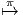

Figure 3.1: Un espace fibré
Avant d’introduire la notion d’espace fibré, nous allons montrer comment “le langage des fibrés” permet d’analyser de manière originale un aspect bien connu de la théorie des ensembles, à savoir la notion d’application d’un ensemble dans un autre, tout en y apportant un nouvel éclairage.
Soit π une application quelconque de P (espace de départ) dans M (espace d’arrivée). L’application π n’ayant aucune raison d’être injective, notons Fx = π-1(x) l’ensemble des antécédents de x ∈ M par π. Lorsque x décrit M, les ensembles Fx sont, bien entendu, distincts, puisque π est une application (il n’en serait pas nécessairement ainsi dans le cas où π serait une simple correspondance). En général aussi, la cardinalité de Fx, ou même sa structure topologique peut varier avec x.
Utiliser “le langage des fibrés” consiste à effectuer le changement de vocabulaire suivant :
| Espace de départ P | -→ | Espace total P |
| Espace d’arrivée M | -→ | Base M |
| Application π | -→ | Projection π |
| Ensemble Fx des antécédents de x | -→ | Fibre Fx au dessus de x |
et schématiser la situation par le dessin 3.1.
On peut toujours supposer π surjective, au besoin en dégonflant l’espace d’arrivée M, mais π ne sera pas, en général, injective (en d’autres termes, card(Fx) est, en général, plus grand que 1). Choisissons donc, pour chaque x de M, un certain antécédent, c’est à dire un élément de Fx. Nous noterons σ(x) l’antécédent choisi. Par construction, σ est une application de M dans P telle que π ∘σ = 1 l, où le 1 l du membre de droite désigne l’application identique de M. Une telle application σ est, par définition, une section de l’application PM. Le mot “section” vient du fait qu’intuitivement, on définit σ en découpant avec des ciseaux la figure 3.1 le long du pointillé. Le fait que π ne soit pas injective montre qu’il existe généralement de nombreuses sections σ différentes (notons que nous n’avons, pour le moment, rien imposé sur l’application σ). Chacune de ces sections définit donc un inverse (à droite) pour l’application π ; encore une fois, il nous faut insister sur le fait qu’il existe en général plusieurs sections et que le choix d’une telle section résulte … d’un choix ! Lorsque M est muni d’une topologie, le choix d’une section au dessus d’un ouvert U ⊂ M est désigné sous le nom de “choix d’une section locale pour l’application π”.
Le vocabulaire précédent est tellement général qu’il est utilisable pour des applications entre ensembles quelconques. Le lecteur pourra donc s’amuser à “repenser”, en ces termes, certaines de ses applications favorites.
Considérons, à titre d’exemple, l’application suivante qui, à tout point de la sphère unité, associe sa projection sur l’axe Oz :
 (0, 0,z) ∈ M
(0, 0,z) ∈ MLa fibre au dessus d’un point quelconque intérieur au segment M est un cercle de S2 parallèle à l’équateur xOy. Lorsque le point de M choisi coïncide avec l’un des deux pôles {0, 0,±1}, la fibre correspondante se réduit à un point (cercle de rayon nul).
De la même façon, l’analyse de la fonction exponentielle iθ ∈ P = iI R eiθ ∈ M = S1
en utilisant le langage des fibrés revient à “regarder” la figure 3.2
eiθ ∈ M = S1
en utilisant le langage des fibrés revient à “regarder” la figure 3.2
Dans le cas présent, la fibre au dessus de n’importe quel point xθ = eiθ du cercle S1 est un ensemble F θ = {θ + 2kπ tel que k ∈ Z Z} qu’on peut mettre en bijection avec l’ensemble des entiers Z Z. Toute section définit un inverse pour l’exponentielle, c’est à dire une détermination du logarithme : exp Logeiθ = eiθ ; en pratique, on veut que ces déterminations soient des fonctions continues, ce qui impose des conditions supplémentaires sur les sections correspondantes.
Comme nous venons de le voir, toute application peut être décrite dans le “langage des fibrés”, mais toute application n’est pas une fibration : dans le cadre de cet ouvrage, nous travaillons dans la catégorie des variétés différentiables et nous dirons qu’une application π : P → M est une fibration si toutes les fibres π-1(x), x ∈ M sont difféomorphes (on suppose ici que P et M sont des variétés et que π est différentiable). Plus généralement, même dans le cas où les fibres sont discrètes, on dira qu’on a affaire à une fibration si toutes les fibres ont même cardinalité.
Puisque toutes les fibres sont difféomorphes, on dira que la fibre type est F lorsque toutes les fibres sont “de type F”, ce qui signifie : difféomorphes à F.
Soit P → M une fibration et U ⊂ M un ouvert de M appartenant à l’atlas définissant la structure différentiable de M. On a envie, intuitivement, de se représenter l’ensemble des antécédents π-1(U) comme un cylindre “au dessus de U” (voir figure 3.3).
On appelle espace fibré localement trivial la donnée d’une fibration (P,M,π) telle que, pour tout ouvert U de M, l’ensemble π-1(U) soit difféomorphe à U × F où F est la fibre type de la fibration. La condition de trivialité locale est souvent sous-entendue, et on parle alors simplement d’espace fibré.
Dire que (P,M,π) est localement trivial consiste à affirmer, comme nous l’avons vu, que localement, l’espace total P ressemble à un produit : c’est la propriété π-1(U) ≃ U × F. Cependant, le fait que P ≃ M × F n’est pas une propriété imposée. Lorsque tel est le cas, on dit que P est un fibré trivial. Bien qu’utilisable en toute généralité, la théorie des espaces fibrés est surtout intéressante lorsque P est seulement localement trivial, mais n’est pas trivial. Nous rencontrerons une multitude de tels exemples dans ce qui suit.
Lorsque U est un ouvert de M, dire que π-1(U) est difféomorphe à U ×F revient à dire qu’il existe un difféomorphisme ψU entre les deux ensembles :

La trivialisation ψU(z) = (x = π(z),g) est parfaitement caractérisée par l’application gU : π-1(U) → F définie par g U(z) = g ; en d’autres termes, le point z de P est caractérisé par le point x = π(z) sur M et le point g = gU(z) sur F. Seul le point x est canoniquement défini par la fibration ; l’élément g de F, au contraire, résulte du choix d’une trivialisation locale. Pour que ces deux composantes (les deux points (x,g) ∈ M × F) deviennent des coordonnées (des nombres), il suffit de choisir un repère local sur M et sur F. On pourra schématiser la situation par la figure 3.4.
Soient (P,M,π) et (P′,M′,π′) deux espaces fibrés. On dira que le premier est un sous-fibré du second si P (respectivement M) est une sous-variété de P′ (respectivement M′) et si π coïncide avec la restriction correspondante de π′.